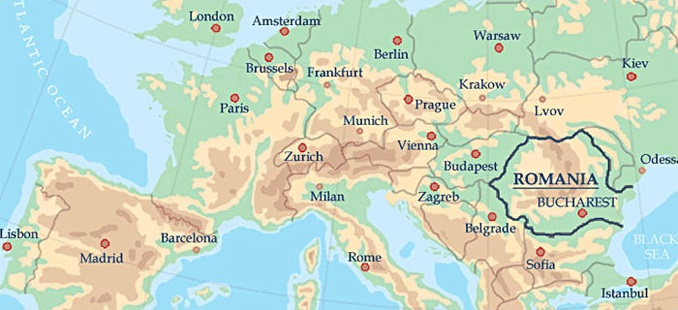
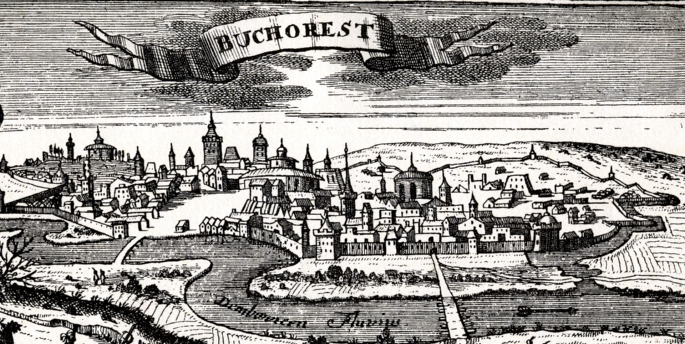
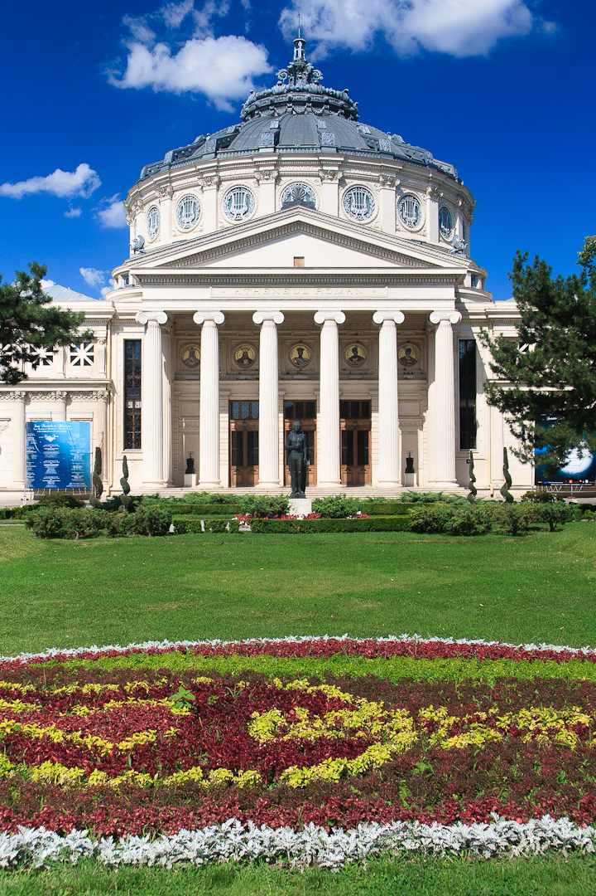
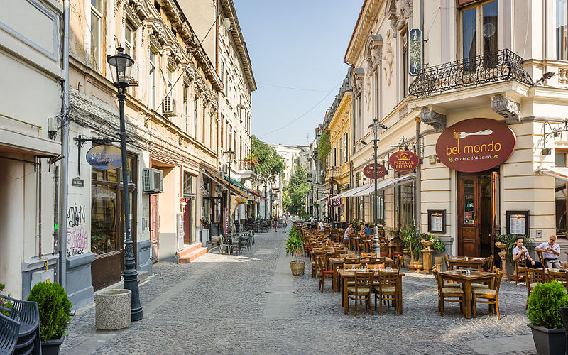

Bucharest (București), city (2016 pop. 2,106,104), is the capital of Romania, one of the countries central cultural and financial hotspots,
sitting on the banks of the Dâmbovița river.

The first clear mentions of Bucharest are found in documents dating in 1459. It became the capital of Romania in 1862 and is the centre of Romanian media, culture, and art. Its architecture is a mix of historical (neo-classical), interbellum (Bauhaus and art deco), communist-era and modern. In the period between the two World Wars, the city's elegant architecture and the sophistication of its elite earned Bucharest the nickname of "Little Paris" (Micul Paris).

Bucharest has landmark buildings and monuments. Perhaps the most prominent of these is the Palace of the Parliament, built in the 1980s during the reign of Communist dictator Nicolae Ceaușescu. Another landmark in Bucharest is Arcul de Triumf (The Triumphal Arch), built in its current form in 1935 and modeled after the Arc de Triomphe in Paris. A newer landmark of the city is the Memorial of Rebirth, a stylized marble pillar unveiled in 2005 to commemorate the victims of the Romanian Revolution of 1989, which overthrew Communism. InterContinental Bucharest is a high-rise five-star hotel situated near University Square and is also a landmark of the city.
In terms of visual arts, the city has museums featuring both classical and contemporary Romanian art, as well as selected international works. The National Museum of Art of Romania is perhaps the best-known of Bucharest museums, located in the royal palace and featuring collections of medieval and modern Romanian art. Other, smaller, museums contain specialised collections. The Zambaccian Museum, contains works by well-known Romanian artists and international artists. The Gheorghe Tattarescu Museum contains portraits of Romanian revolutionaries in exile and allegorical compositions with revolutionary (Romania's rebirth, 1849) and patriotic (The Principalities' Unification, 1857) themes. Another impressive art collection gathering important Romanian painters, can be found at the Ligia and Pompiliu Macovei residence, which is open to visitors as it is now part of the Bucharest Museum patrimony. The Theodor Pallady Museum is situated in one of the oldest surviving merchant houses in Bucharest and includes works by Romanian painter Theodor Pallady, as well as European and oriental furniture pieces. Throne room at the royal palace, which today houses the National Museum of Art. The Museum of Art Collections contains the collections of Romanian art aficionados, including Krikor Zambaccian and Theodor Pallady. Despite the classical art galleries and museums in the city, a contemporary arts scene also exists. The National Museum of Contemporary Art (MNAC), situated in a wing of the Palace of the Parliament, contains Romanian and international contemporary art. The MNAC also manages the Kalinderu MediaLab, which caters to multimedia and experimental art. Private art galleries are scattered throughout the city centre. The palace of the National Bank of Romania houses the national numismatic collection, being constructed between 1884 and 1890.
Performing arts are some of the strongest cultural elements of Bucharest. The most famous symphony orchestra is National Radio Orchestra of Romania. One of the most prominent buildings is the neoclassical Romanian Athenaeum, which was founded in 1852, and hosts classical music concerts. Bucharest is home to the Romanian National Opera and the I.L. Caragiale National Theatre. Smaller theaters throughout the city cater to specific genres, such as the Comedy Theatre, the Nottara Theatre, the Bulandra Theatre, the Odeon Theatre, and the revue theater of Constantin Tănase. A number of cultural festivals are held in Bucharest throughout the year. The National Opera organizes the International Opera Festival every year in May and June. The Romanian Athaeneum Society hosts the George Enescu Festival in September every two years. In 2004, Bucharest imposed in the circle of important festivals in Eastern Europe with the Bucharest International Film Festival. Since 2005, Bucharest has its own contemporary art biennale, the Bucharest Biennale.

Traditional Romanian culture has a major influence in arts such as theatre, film, and music, Bucharest having two internationally renowned ethnographic museums, the Museum of the Romanian Peasant and the open-air Village Museum. The Dimitrie Gusti National Village Museum, in Herăstrău Park, contains 272 authentic buildings and peasant farms from all over Romania. The Museum of the Romanian Peasant holds one of the richest collections of peasant objects in Romania, its heritage being nearly 90,000 pieces. The Museum of Romanian History is another important museum in Bucharest, containing a collection of artifacts detailing Romanian history and culture from the prehistoric times, Dacian era, medieval times, and the modern era.
Bucharest is home to Romania's largest recording labels, and is often the residence of Romanian musicians. Romanian rock bands of the 1970s and 1980s, continue to be popular, while since the beginning of the 1990s, the newer music styles flourished, enjoying national and international recognition. With many discos, the city has a rich jazz and blues scene, and to an even larger extent, house music/trance and heavy metal/punk scenes. With no central nightlife strip, entertainment venues are dispersed throughout the city.
